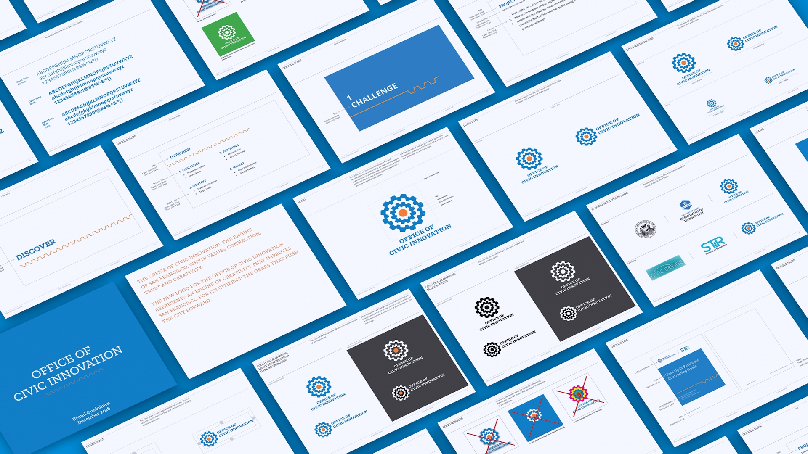
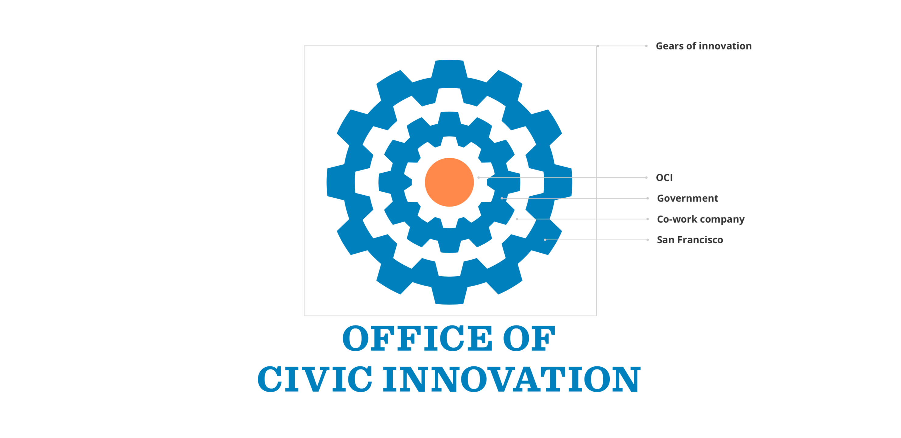
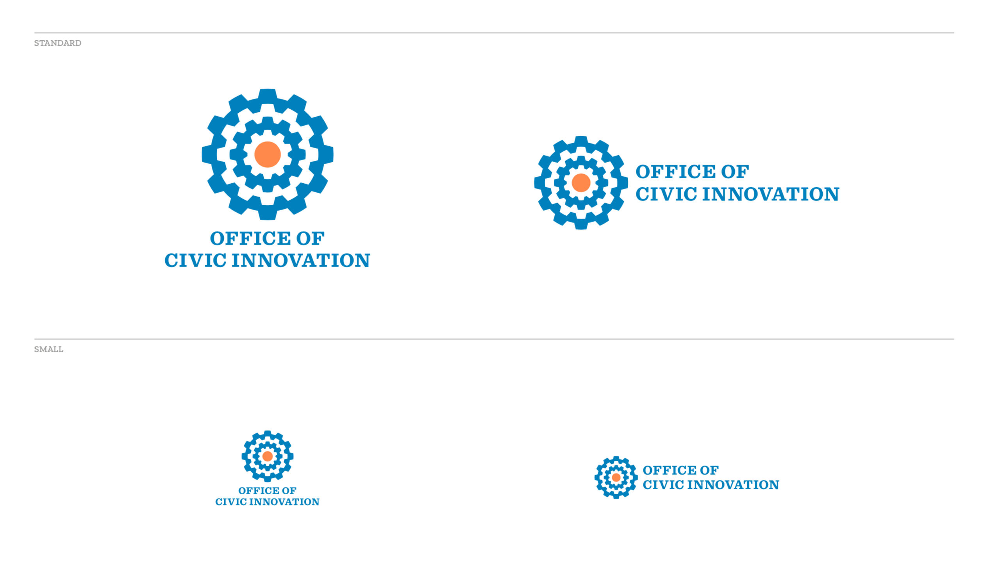
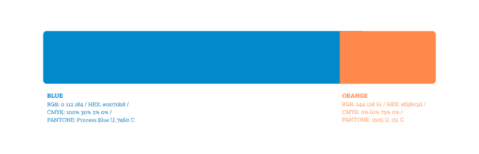
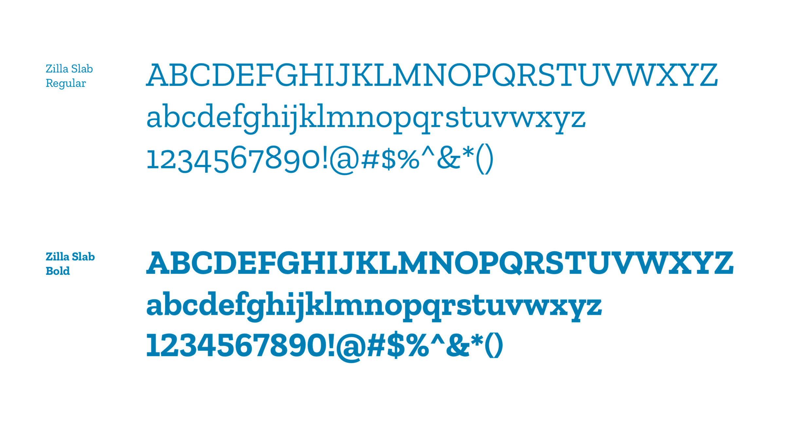
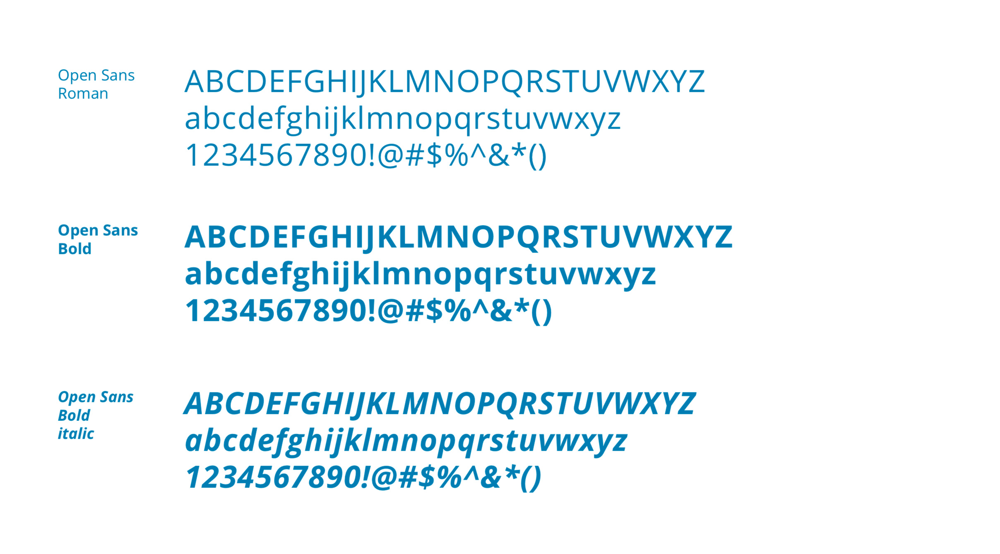
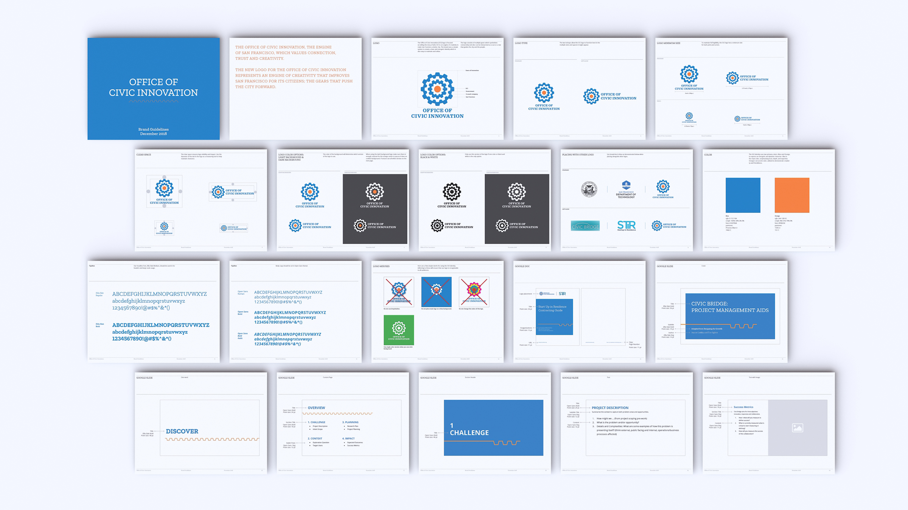
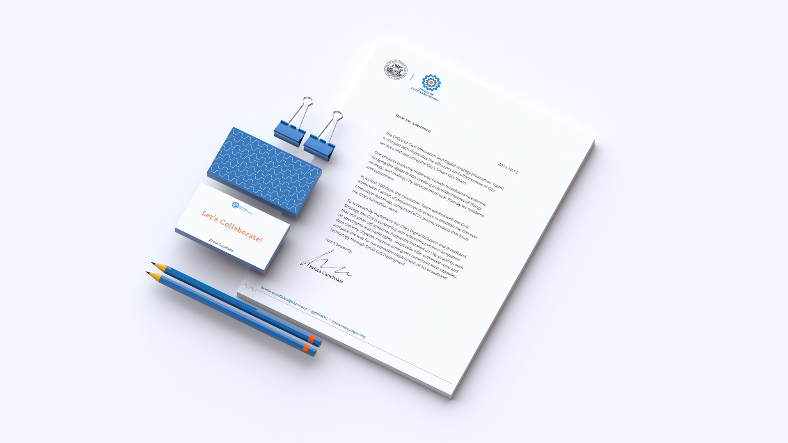
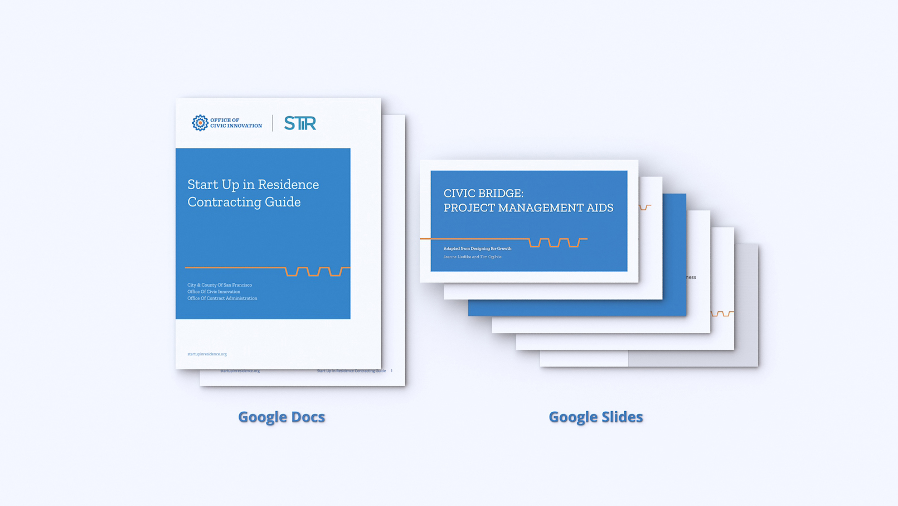
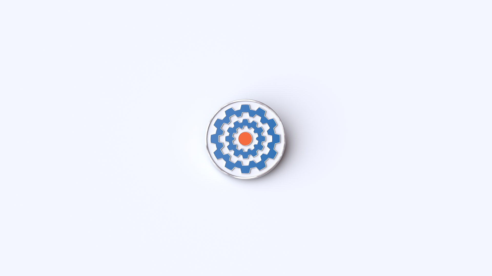

Office of Civic Innovation
Brand identity and applications for San Francisco’s Office of Civic Innovation
TBD* · Lead Designer · Branding / Applications
Overview
As lead designer at TBD*, I developed an identity system for San Francisco’s Office of Civic Innovation (OCI) to increase its visibility and support its mission. The system brings together a logo, color palette, typography, and applications.
Logo
The logo presents OCI as an engine of creativity working to make San Francisco a better city. Interlocking gears express that role, with vertical and horizontal lockups for different applications.


Logo motion
Color
Blue and orange give the identity an energetic, dynamic character. Blue is the primary color, conveying trust, depth, and expertise. Orange adds creativity and friendliness as an accent.

Typography
The identity pairs Zilla Slab with Open Sans.


Brand guidelines
Logo, color, typography, and usage rules are brought together in a single set of brand guidelines.

Applications
The identity extends to stationery, Google Docs and Slides templates, and a badge.


